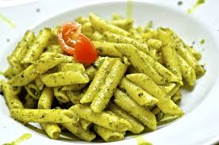

Pesto Pasta
Go back to Odin Recipes

Description
A delicious way of make a penne rigate
Fast, simple and easy meal to cook in 10 minutes
Ingredients
- Pasta
- Onion and Oil
- Pesto
- Seasonings
- Cheese
Steps
- Gather all ingredients
- Fill a large pot with lightly salted water and bring to a rolling boil. Stir in pasta and return to a boil. Cook pasta uncovered, stirring occasionally, until tender yet firm to the bite, about 8 to 10 minutes. Drain and transfer into a large bowl.
- Meanwhile, heat oil in a frying pan over medium-low heat. Add onion; cook and stir until softened, about 3 minutes.
- Stir in pesto, salt, and pepper until warmed through.
- Add pesto mixture to hot pasta; stir in grated cheese and toss well to coat.
For more recipes check the recipes below
Enjoy!